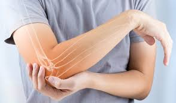
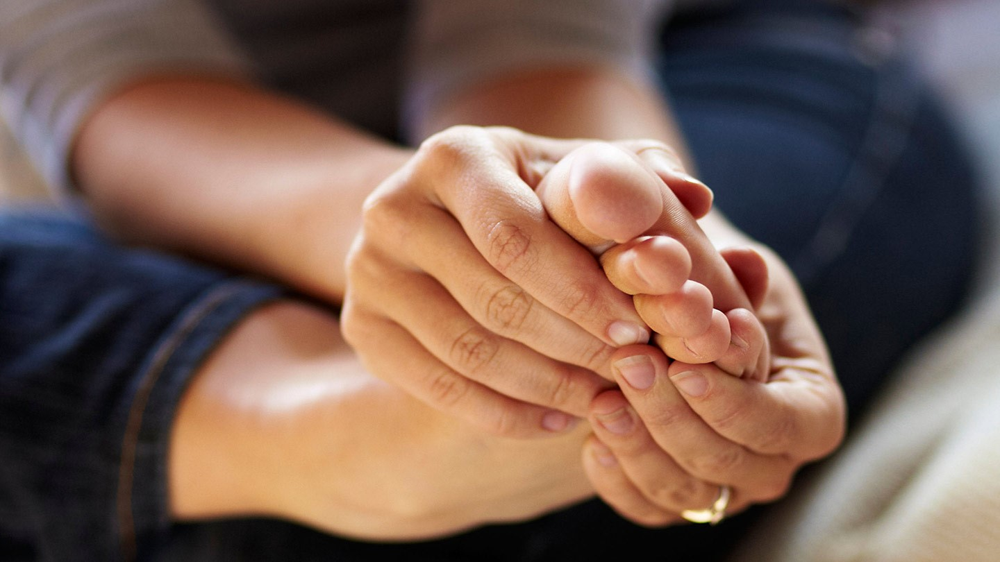
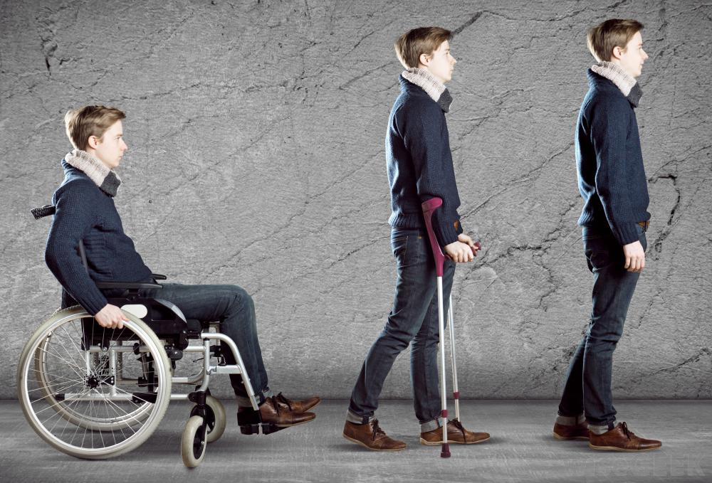
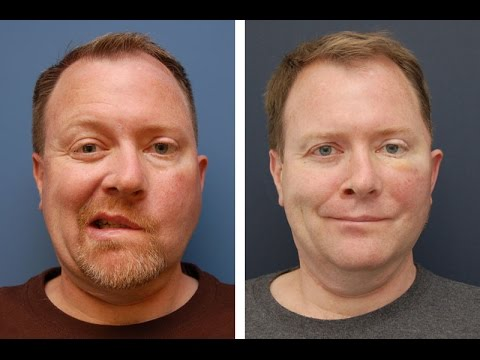
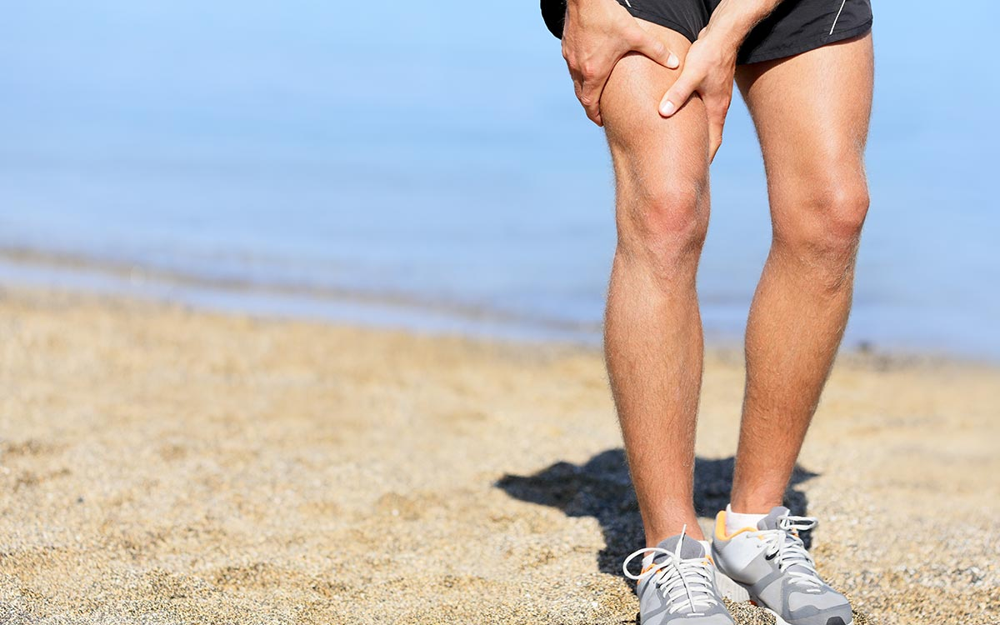
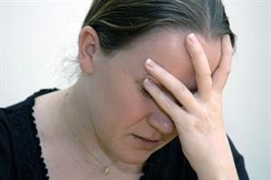
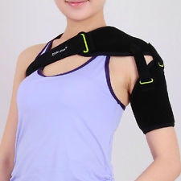
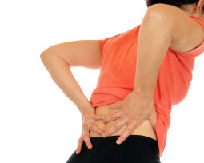

Opening Hours:
Santipara,Ward No.1,Mangaldai(Darang),Assam
Our Services
Here at Physiotherapy clinic And Rehabilitation, we believe in taking the best steps to get you moving again. We believe that to get you back to optimal health, it’s important to find a solution that you understand and can commit to, so at every step we make it our priority to ensure that you are comfortable with your treatment. We understand that the best way to properly assess your problems is meeting you face-to-face. Book in for an initial consultation with us and we can determine together the best course of treatment to resolve your problem. Be assured that at every step of the way you will be involved in the decision making process, and won’t be tied into appointments that you don’t need. Get in touch via phone or email. We look forward to hearing from you
What can we treat
We have the skills and experience to treat a wide variety of problems that may prevent you from enjoying your normal day to day lifestyle or hobbies. We see people of all ages from children to elderly clients and can even do home visits if your mobility prevents you from coming to the clinic. The most common problems that we see are listed below, but please ring the clinic or fill in our contact form if you need advice on a specific problem not listed, or if you would rather discuss your problem in more detail with one of our therapists.
- 
Rheumatoid arthritis is an autoimmune disease that causes chronic inflammation of the joints and other areas of the body. Rheumatoid arthritis symptoms and signs include -joint pain, such as in the joints of the feet, hands, and knees,swollen joints,fever,limping,polyarthritis,loss of range of motion, tender joints,loss of joint function,stiff joints, fatigue, joint redness, rheumatoid nodules, anemia and joint warmth.
- 
Rheumatoid arthritis is an autoimmune disease that causes chronic inflammation of the joints and other areas of the body. Rheumatoid arthritis symptoms and signs include -joint pain, such as in the joints of the feet, hands, and knees,swollen joints,fever,limping,polyarthritis,loss of range of motion, tender joints,loss of joint function,stiff joints, fatigue, joint redness, rheumatoid nodules, anemia and joint warmth.
- 
Paraplegia is paralysis (loss of movement or sensation, or both) brought on by a severe trauma to the central nervous system. The individual can't stand or walk. Muscles may sometimes spasm (cramp). It may be difficult to sit up.
- 
Facial paralysis is a loss of facial movement due to nerve damage.Symptoms- facial paralysis on one side (rarely are both sides of the face affected), loss of blinking control on the affected side, decreased tearing, drooping of the mouth to the affected side, altered sense of taste, slurred speech, drooling, pain in or behind the ear, sound hypersensitivity on the affected side, difficulty eating or drinking
- 
The location and severity of knee pain may vary, depending on the cause of the problem.Symptoms-Swelling and stiffness Redness and warmth to the touch, Weakness or instability, Popping or crunching noises, Inability to fully straighten the knee.
- 
Neurological disorders are diseases of the central and peripheral nervous system. In other words, the brain, spinal cord, cranial nerves, peripheral nerves, nerve roots, autonomic nervous system, neuromuscular junction, and muscles. Symptoms-Muscle weakness, Partial or complete loss of sensation, Seizures, Difficulty reading and writing, Poor cognitive abilities,Unexplained pain. Decreased alertness.
- 
Hemiplegia is a form of paralysis that affects just one side of the body, often just one arm and one leg, but occasionally with symptoms extending partially into the torso. A related condition, hemiparesis, is significant loss of strength and mobility on one side of the body, but without full paralysis. Symptoms- Spastic attacks during which the muscles move without your conscious control,Total or partial loss of sensation on just one side,Changes in cognition, mood, or perception.
- 
Low and lower back pain can vary from dull pain that develops gradually to sudden, sharp or persistent pain felt below the waist. Symptoms- Pain that is dull or achy, contained to the low back, Stinging, burning pain that moves from the low back to the backs of the thighs, sometimes into the lower legs or feet; can include numbness or tingling (sciatica),Muscle spasms and tightness in the low back, pelvis, and hips, Pain that worsens after prolonged sitting or standing ,Difficulty standing up straight, walking, or going from standing to sitting.